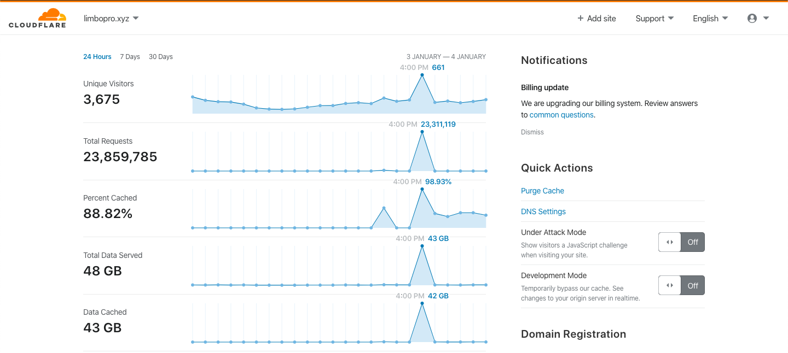
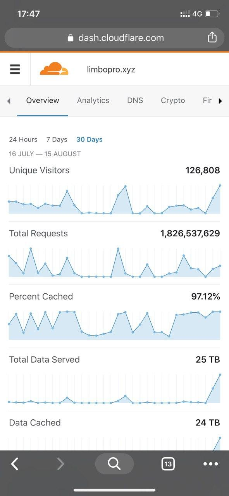

<?xml version="1.0" encoding="UTF-8"?>
<rss version="2.0"
xmlns:content="http://purl.org/rss/1.0/modules/content/"
xmlns:dc="http://purl.org/dc/elements/1.1/"
xmlns:slash="http://purl.org/rss/1.0/modules/slash/"
xmlns:atom="http://www.w3.org/2005/Atom"
xmlns:wfw="http://wellformedweb.org/CommentAPI/">
<channel>
<title>毒奶博主丨欢迎使用代理访问本站。 - 建站指南</title>
<link>https://limbopro.xyz/category/LNMP/</link>
<atom:link href="https://limbopro.xyz/feed/category/LNMP/" rel="self" type="application/rss+xml" />
<language>zh-CN</language>
<description></description>
<lastBuildDate>Fri, 03 Jan 2020 09:52:00 +0800</lastBuildDate>
<pubDate>Fri, 03 Jan 2020 09:52:00 +0800</pubDate>
<item>
<title>DDoS/CC 防御 100%免费丨自动拉黑异常IP并提交至Cloudflare丨分钟级检查丨Cloudflare User-level Firewall Access Rule API</title>
<link>https://limbopro.xyz/archives/6949.html</link>
<guid>https://limbopro.xyz/archives/6949.html</guid>
<pubDate>Fri, 03 Jan 2020 09:52:00 +0800</pubDate>
<dc:creator>毒奶</dc:creator>
<description><![CDATA[本文隶属于 网站优化 分类，点击分类名称查看更多相关主题；[post cid="6719" cover="https://limbopro.xyz/usr/uploads/2019/12/173...]]></description>
<content:encoded xml:lang="zh-CN"><![CDATA[
<p></p><p>本文隶属于 <a href="../../../category/Typecho/index.html">网站优化</a> 分类，点击分类名称查看更多相关主题；<br>[post cid="6719" cover="https://limbopro.xyz/usr/uploads/2019/12/1736885170.png"/]</p><p>其他参考资料：<a href="../../../usr/uploads/2020/01/1714301628.pdf">DDoS_White_Paper_CN.pdf</a></p><h2>主理人说</h2><p>找这个<a href="https://api.cloudflare.com/#user-level-firewall-access-rule-list-access-rules">API</a>已经找了很久了（Cloudflare 的控制面板 <code>Firewall</code>模块下，Cloudflare似乎对它进行了刻意隐藏，后来在 <a href="https://api.cloudflare.com/#user-level-firewall-access-rule-create-access-rule">Cloudflare API 资料库</a>找到了详细API使用说明）；（for 循环提交异常IP的脚本，源自 <a href="https://www.9sep.org/cloudflare-batch-firewall-blacklist">9sep.org</a>博客，在此感谢脚本原作者；</p><p><strong>车有车牌，打电话得有电话号码，上网得有个IP地址</strong>；<a href="https://zh.wikipedia.org/zh-cn/IP%E5%9C%B0%E5%9D%80">IP地址</a>主要有两个功能：标识主机或者网络和寻址。SO？不管是物联网设备也好还是被劫持的肉鸡，归根结底都是一个个在线的IP；所谓DDoS攻击？大概就是不计其数的IP对目标IP发起恶意请求，大白话就是无数的骚扰电话，呼死你；</p><p>1.<a href="https://www.cloudflare.com/zh-cn/learning/ddos/what-is-a-ddos-attack/">DDoS是什么</a>？Cloudflare 官方说明；<br>2.如何缓解/清洗/防御DDoS/CC攻击的方法？禁止异常IP与服务器取得联络（不对异常IP提供服务）；<br>3.无请求便无性能损耗；</p><p><strong>本教程及其脚本并非一劳永逸，但能在遭受攻击后，快速且有效地缓解异常请求对服务器的性能损耗</strong>；通过对nginx日志进行分析，提取异常IP（短时间内该IP的请求次数超过阈值）并提交至Cloudflare的防火墙（Firewall rules），即，将DDoS/CC攻击IP/代理封锁在Cloudflare CDN前端；除非攻击者有<strong>无限的代理IP</strong>，否则攻击将会在短时间（看你设置的脚本执行周期以及触发封禁IP的请求阈值）内被清洗干净。DDoS/CC防御 100%？我觉得还行（如果你用其他CDN，亦可参考本文；同理）。</p><h2>第一步 安装模块</h2><p>[post cid="1481" cover="https://limbopro.xyz/usr/uploads/2019/12/2913761642.jpg"/]<br><strong>Cloudflare 下 Nginx 获取用户真实IP 地址</strong></p><p>当您的网站流量路由经过 Cloudflare 时，我们充当反向代理。 这允许 Cloudflare 通过更有 效地路由数据包并缓存静态资源（图片、JavaScript、CSS 等）来加快页面加载时间。因此， 在响应请求并记录请求时，您的源 Web 服务器默认情况下会看到 Cloudflare IP 地址。</p><p>Cloudflare 会在名为 CF-Connecting-IP 的附加 HTTP 标头中添加实际的访问者 IP 地址。但是，如果您有其他依赖于真实访问者的IP 地址的应用程序，则可能会出现某些问题。</p><h2>第二步 制作IP黑名单</h2><p><strong>禁止ip频繁访问及自动拉黑名单，防CC/DDoS攻击的一般性方法</strong><br>以前我们对异常请求的IP进行封禁，即从nginx输出层面，返回<a href="https://zh.wikipedia.org/zh-hans/HTTP_403">403状态码</a>，以减轻服务器压力；现在我们直接把收集到的异常IP，从 Cloudflare 防火墙<strong>进行自动化</strong>封禁处理；</p><p>*注：短时间内IP发出大量请求，简单判定为异常，并将该IP加入黑名单即可；</p><p><strong>拉黑IP教程概要</strong><br>拉取/提取临时日志，分析临时日志，判定异常，生成异常IP列表，提交异常IP至<a href="http://cloudflare.com/">Cloudflare</a>；</p><p><strong>第一步，拉取一定时间范围内的请求日志</strong><br>这一步你只需填写<code>原始日志</code>的正确位置，以及<code>临时日志</code>的存放位置即可；</p><pre><code>&gt; /home/f5.log; #每次拉取临时日志时清除上一次拉取的遗留下来的临时日志
## 拉取临时日志 
function define()
{
    ori_log_path=&quot;/home/wwwlogs/limbopro.xyz/access.log&quot; #原始日志
    tmp_log_path=&quot;/home/f5.log&quot; #拉取临时日志存放的位置
    date_stamp=`date -d &quot;-2min&quot; +%Y:%H:%M:%S` #从原始日志处读取最近2分钟的日志记录并存储至临时日志处存放，这个2可以改为任意数字但不应该超过日志记录的起止期限
    day_stamp=`date +%d`
}

function gather()
{
    awk -F '[/ &quot;\[]' -vnstamp=&quot;$date_stamp&quot; -vdstamp=&quot;$day_stamp&quot; '$7&gt;=nstamp &amp;&amp; $5==dstamp' ${ori_log_path} &gt; ${tmp_log_path}; #拉取日志
    log_num=`cat ${tmp_log_path} | wc -l`; #计算请求次数
    request_time=`awk '{print $(NF-1)}' ${tmp_log_path} | awk '{sum+=$1}END{print sum}'`; #请求时间
    ave_request_time=`echo | awk &quot;{print ${request_time}/${log_num}}&quot; `; #平均请求时间
    ipcounts=$(awk '{print $1}' ${tmp_log_path} | sort -n | uniq | wc -l); #统计IP个数
    date=$(env LANG=en_US.UTF-8 date &quot;+%e/%b/%Y/%R&quot;)
}

function output()
{
date=$(env LANG=en_US.UTF-8 date &quot;+%e/%b/%Y/%R&quot;)
}

function main()
{
    define
    gather
    output
}

main</code></pre><p>从原始日志处<code>/home/wwwlogs/limbopro.xyz/access.log</code>(以实际为准)拉取临时日志，并存放在<code>/home/f5.log</code>（你可自定义），然后对该临时日志进行分析；</p><p><strong>第二步，判定异常并制作黑名单</strong><br>这一步你只需定义<code>黑名单</code>存放位置（务必使用<code>.conf</code>后缀），以及单独拎出IP列表即下方的<code>/home/cf.conf</code>；</p><pre><code>##第三步 拉黑名单
date=$(env LANG=en_US.UTF-8 date &quot;+%e/%b/%Y/%R&quot;)
blockip=/home/f5.conf #nginx封禁配置
cfblockip=/home/cf.conf #定义IP黑名单集合留作给CF用
access=/home/f5.log #读取临时日志
for ip in $(awk '{cnt[$1]++;}END{for(i in cnt){printf(&quot;%s\t%s\n&quot;, cnt[i], i);}}' ${access} | awk '{if($1&gt;40) print $2}') 
##请求次数超过40次即封禁 {if($1&gt;40)
do 
echo &quot;deny ${ip};&quot; &gt;&gt; $blockip
echo &quot;${ip}&quot; &gt;&gt; $cfblockip
done

lnmp nginx reload;</code></pre><p><strong>第三步，配置 nginx.conf 使之生效 </strong> （按理说，有了第四步，第三步或可不要）</p><pre><code>...
server
{
listen 443 ssl http2;
server_name limbopro.xyz ;

include /home/whitelist.conf;
include /home/f5.conf; #频繁刷新第一次
...
}</code></pre><p>配置 nginx.conf，添加 <code>/home/f5.conf</code> 至 nginx.conf 配置文件，重启nginx即可生效；异常请求IP再次对网站发起请求时将会获得403状态码；</p><p><strong>第四步，提交黑名单至 Cloudflare </strong></p><p><br>via Cloudflare CDN 工作原理示意图；</p><p>就算在nginx这里就返回了403状态码，但异常请求仍会对服务器性能造成损耗，所以我们只能从 Cloudflare 防火墙层面对异常请求进行封堵即可（参考Cloudflare CDN 工作原理示意图可见一二）；</p><p></p><pre><code>#!/bin/bash
# Author: Zhys
# Date  : 2018
# blog : https://www.9sep.org/
CFEMAIL=&quot;Cloudflare 邮箱账号&quot; 
CFAPIKEY=&quot;Cloudflare APIKEY&quot; #Cloudflare 控制面板-页面右上角-My Profile-API Tokens-API Keys-Global API Key 可以找到；
ZONESID=&quot;Cloudflare ZONE ID&quot; #Cloudflare 控制面板-Overview 模块- 右侧栏 - API-ZONE ID可以找到
IPADDR=$(&lt;/home/cf.conf) #
for IPADDR in ${IPADDR[@]}; do
echo $IPADDR
curl -s -X POST &quot;https://api.cloudflare.com/client/v4/zones/$ZONESID/firewall/access_rules/rules&quot; \
  -H &quot;X-Auth-Email: $CFEMAIL&quot; \
  -H &quot;X-Auth-Key: $CFAPIKEY&quot; \
  -H &quot;Content-Type: application/json&quot; \
  --data '{&quot;mode&quot;:&quot;block&quot;,&quot;configuration&quot;:{&quot;target&quot;:&quot;ip&quot;,&quot;value&quot;:&quot;'$IPADDR'&quot;},&quot;notes&quot;:&quot;limbo-auto-block&quot;}'
done</code></pre><p>cf 自封禁完全脚本来自 <a href="https://www.9sep.org/cloudflare-batch-firewall-blacklist">9sep.org</a>，另，我 for 循环不大会写，虽然看得懂；<br>大家可以把这三步做成一个脚本，使用 <a href="https://www.runoob.com/linux/linux-comm-crontab.html">Crontab</a> 命令自动执行即可。</p><p>以上。</p><h2>效果展示</h2><p></p><p></p><p></p><p></p><p>via <a href="https://t.me/limboprossr/1220">https://t.me/limboprossr/1220</a></p><h2>IP Access Rules 的说明</h2><p>可登入<a href="https://dash.cloudflare.com/">Cloudflare</a>-Firewall-Tools 模块下查看；</p><pre><code>IP Access Rules can be based on IP address, IP address range, Autonomous System Number (ASN) or country.</code></pre><p>即可基于 <code>IP地址</code>/<code>IP段</code>/<a href="https://zh.wikipedia.org/zh-hans/%E8%87%AA%E6%B2%BB%E7%B3%BB%E7%BB%9F">自治系统号</a>/<code>国家</code>，进行相应操作，例如：</p><pre><code>What option should I choose?
Block: Ensures that an IP address will never be allowed to access your website
Challenge: Specified IP addresses will be shown a CAPTCHA before being allowed to access your website
JavaScript Challenge: The JavaScript challenge page requires the visitor to wait 5 seconds while Cloudflare determines if the visitor is coming from a real browser. The challenge requires the visitor's browser to answer a math problem which takes a bit of time to compute. Once successfully answered, the browser will be remembered and won't be challenged again.
Whitelist: Ensures that an IP address will never be blocked from accessing your website. The IP may still be mitigated if part of a DDoS attack. Only use for verified IPs that you trust!
What can IP Access Rules be applied to?
IP Access Rules can be applied based on:

IP address
IP address range: Cloudflare accepts the following CIDR notations: /16 and /24 for IPv4 addresses and /64, /48, and /32 for IPv6
Autonomous System Number (ASN): An ASN is the unique identifier for any network, such as the Cloudflare network (AS13335). The accepted format for ASN's is &quot;AS12345&quot;
Country: Specified using ISO 2-letter country codes, such as &quot;US&quot; for the United States
You can apply IP Access Rules to this domain only or all domains in your account.

To modify an existing Access Rule, create a new Access Rule and delete the existing one.</code></pre><p>Block（黑名单）/Challenge（验证码）/JavaScript Challenge(五秒盾)/Whitelist（白名单），按理说如果你是非 Cloudflare 付费用户，你只能一个一个Rule（规则）的添加，这个时候API就显得特别重要（无数量限制，且可制作脚本并利用 Crontab <br>自动执行实时相应操作）；</p><h2>Cloudflare API</h2><p><a href="https://api.cloudflare.com/#user-level-firewall-access-rule-properties">https://api.cloudflare.com/#user-level-firewall-access-rule-properties</a> <br>*这个API可以用作提交指定IP至<code>IP Access Rules</code>里面（或可登入<a href="https://dash.cloudflare.com/">Cloudflare</a>-Firewall-Tools-可以进行一个一个添加），批量的，可以进行脚本化，自动化（利用 <a href="http://www.runoob.com/linux/linux-comm-crontab.html">Crontab</a> 命令定时执行脚本）；</p><p><strong>Cloudflare API 档案库</strong>：<a href="https://api.cloudflare.com/">https://api.cloudflare.com/</a> ，例如利用脚本<a href="https://api.cloudflare.com/#user-level-firewall-access-rule-list-access-rules">自动切换防御模式</a>，<a href="https://api.cloudflare.com/#zone-purge-all-files">清除或开启缓存</a>，增加或修改<a href="https://api.cloudflare.com/#page-rules-for-a-zone-update-page-rule">PageRules</a>等等；</p><h2>cURL 命令</h2><p>curl命令是一个利用URL规则在命令行下工作的文件传输工具。 它支持文件的上传和下载。 curl支持包括<code>HTTP</code>、<code>HTTPS</code>、<code>ftp</code>等众多协议，还支持<code>POST</code>、<code>cookies</code>、<code>认证</code>、从指定偏移处下载部分文件、用户代理字符串、限速、文件大小、进度条等特征。</p><p>via <a href="https://blog.csdn.net/u012340794/article/details/71440604">CSDN</a></p><p>[post cid="6538" cover="https://limbopro.xyz/usr/uploads/2019/12/2912835083.jpg"/]</p><h2>cURL 方法</h2><p>使用 cURL 命令调用Cloudflare User-level Firewall Access Rule API的方法（官方举例）：</p><pre><code>curl -X POST &quot;https://api.cloudflare.com/client/v4/user/firewall/access_rules/rules&quot; \
     -H &quot;X-Auth-Email: user@example.com&quot; \
     -H &quot;X-Auth-Key: c2547eb745079dac9320b638f5e225cf483cc5cfdda41&quot; \
     -H &quot;Content-Type: application/json&quot; \
     --data '{&quot;mode&quot;:&quot;challenge&quot;,&quot;configuration&quot;:{&quot;target&quot;:&quot;ip&quot;,&quot;value&quot;:&quot;198.51.100.4&quot;},&quot;notes&quot;:&quot;This rule is on because of an event that occured on date X&quot;}'</code></pre><p>Cloudflare 服务器返回成功状态（官方举例）</p><pre><code>{
  &quot;success&quot;: true,
  &quot;errors&quot;: [],
  &quot;messages&quot;: [],
  &quot;result&quot;: {
    &quot;id&quot;: &quot;92f17202ed8bd63d69a66b86a49a8f6b&quot;,
    &quot;notes&quot;: &quot;This rule is on because of an event that occured on date X&quot;,
    &quot;allowed_modes&quot;: [
      &quot;whitelist&quot;,
      &quot;block&quot;,
      &quot;challenge&quot;,
      &quot;js_challenge&quot;
    ],
    &quot;mode&quot;: &quot;challenge&quot;,
    &quot;configuration&quot;: {
      &quot;target&quot;: &quot;ip&quot;,
      &quot;value&quot;: &quot;198.51.100.4&quot;
    },
    &quot;created_on&quot;: &quot;2014-01-01T05:20:00.12345Z&quot;,
    &quot;modified_on&quot;: &quot;2014-01-01T05:20:00.12345Z&quot;,
    &quot;scope&quot;: {
      &quot;id&quot;: &quot;7c5dae5552338874e5053f2534d2767a&quot;,
      &quot;email&quot;: &quot;user@example.com&quot;,
      &quot;type&quot;: &quot;user&quot;
    }
  }
}</code></pre><h2>联系主理人</h2><p>1.关注频道 <a href="https://t.me/limboprossr">https://t.me/limboprossr</a> 不失联；<br>2.<code>毒奶粉</code>们（我管我的Fans）可联系 <a href="../../../usr/uploads/2019/10/3453243330.png">TG机器人</a> 或发送 <a href="../../../usr/uploads/2019/10/3453243330.png">邮件</a> 获取帮助；</p><p>3.或点击<code>本页面右下角</code>的聊天按钮联系；</p>
]]></content:encoded>
<slash:comments>0</slash:comments>
<comments>https://limbopro.xyz/archives/6949.html#comments</comments>
<wfw:commentRss>https://limbopro.xyz/feed/archives/6949.html</wfw:commentRss>
</item>
<item>
<title>3个方法秒解各种DDoS丨 终极防御教程（可快速部署且免费）</title>
<link>https://limbopro.xyz/archives/DDoS.html</link>
<guid>https://limbopro.xyz/archives/DDoS.html</guid>
<pubDate>Sat, 28 Dec 2019 23:52:00 +0800</pubDate>
<dc:creator>毒奶</dc:creator>
<description><![CDATA[本文隶属于 网站优化 分类，点击分类名称查看更多相关主题；[post cid="6949" cover="https://limbopro.xyz/usr/uploads/2019/12/237...]]></description>
<content:encoded xml:lang="zh-CN"><![CDATA[
<p></p><p>本文隶属于 <a href="../../../category/Typecho/index.html">网站优化</a> 分类，点击分类名称查看更多相关主题；</p><p>[post cid="6949" cover="https://limbopro.xyz/usr/uploads/2019/12/2377344071.jpg"/]</p><h2>主理人序</h2><p></p><p>DDoS防御还是要做的，兴许哪天就挨打了呢。(另，这篇文章不是完全教程，总结均由实践得出，内容比较白话，教大家知其然知其所以然，排除加钱上高防IP以及扩容的可能性；1.<strong>Cloudflare CDN</strong>（免费套餐足矣），2.MySQL/PHP+Redis 缓存（开源），3.全站静态化（每日备份），秒解狂暴DDoS攻击，且不会花费任何费用，几乎免费；</p><p>另外，新增使用 Cloudflare 百分百抗DDoS教程：<a href="../../../archives/6949.html">自动提交异常IP至Cloudflare，以实现CDN前端封锁DDoS攻击</a>；（01.05.2020）</p><h2>本文概要</h2><p>0.网站为什么会被DDoS<br>1.DDoS为何物<br>2.LNMP（Web后端<br>3.静态网页/动态网页（用户所见所得<br>4.HTTP 请求方法（浏览器如何与服务器联络<br>5.User-Agent（浏览器身份<br>6.502 Bad Gateway（服务器状态反馈代码<br>7.如何应对DDoS（思路</p><h2>为什么会被DDoS</h2><p><strong>原因大概分为四种</strong></p><p>1.小朋友玩过家家<br>2.个人情感宣泄<br>3.名<br>4.利</p><p><strong>个人网站</strong>被打的原因一般是因为前两种，<br><strong>主动攻击</strong>声名远扬[某些领域]的网站一般是因为名，<br><strong>雇人攻击</strong>的一般是因为利，<br>正常情况下，小网站是不会有人碰的，<br>这句话不是瞎说。</p><p><strong>一些具有实践意义的建议</strong><br>高调做人，低调做事</p><h2>DDoS是什么</h2><p>DDoS攻击，又称为分布式拒绝服务 (DDoS) ；攻击是通过大规模 Internet 流量淹没目标服务器或其周边基础设施以破坏目标服务器、服务或网络正常流量的恶意行为。DDoS 攻击利用多台受损计算机系统作为攻击流量来源以达到攻击效果。利用的机器可以包括计算机，也可以包括其他联网资源（如 IoT 设备）。总体而言，DDoS 攻击好比高速公路发生交通堵塞，妨碍常规车辆抵达预定目的地。</p><p><strong>常见的 DDoS 攻击有哪几类？</strong></p><p><strong>不同的 DDoS 攻击手段针对不同的网络连接组件</strong>。为了解不同 DDoS 攻击的工作原理，必需掌握建立网络连接的方式。Internet 网络连接由许多不同的组件或“层”构成。就像打地基盖房子一样，模型中的每一步都有不同的目的。OSI 模型（如下图所示）是一个概念框架，用于描述 7 个不同层级的网络连接。</p><p></p><p>虽然几乎所有 DDoS 攻击都涉及<strong>用流量淹没目标设备或网络</strong>，但攻击可以<strong>分为三类</strong>。攻击者可能利用一种或多种不同的攻击手段，也可能根据目标采取的防范措施循环使用多种攻击手段。</p><p><strong>应用程序层攻击</strong><br></p><p>攻击目标：<strong>有时称为第 7 层 DDoS 攻击</strong>（参考 OSI 模型第 7 层），此类攻击的目标是耗尽目标资源。攻击目标是生成网页并传输网页响应 HTTP 请求的服务器层。 在客户端执行一项 HTTP 请求费用很低，但目标服务器做出响应却可能比较昂贵，因为服务器通常必须加载多个文件并运行数据库查询才能创建网页。第 7 层攻击很难防御，因为很难确定流量是否存在恶意。</p><p><strong>协议攻击</strong><br></p><p>攻击目标：协议攻击（也称为状态表耗尽攻击）旨在耗尽 Web 应用程序服务器或中间资源（如防火墙和负载均衡器）的可用状态表容量，进而导致服务中断。协议攻击利用协议堆栈第 3 层和第 4 层的弱点致使目标无法访问。</p><p><strong>容量耗尽攻击</strong><br></p><p>攻击目标：此类攻击尝试耗尽目标和大型 Internet 之间的可用带宽，从而造成拥塞。运用某种放大攻击或其他生成大量流量的手段（如僵尸网络请求），向目标发送大量数据。</p><p>via <a href="https://www.cloudflare.com/zh-cn/learning/ddos/what-is-a-ddos-attack/">什么是 DDoS 攻击？深入探索 DDoS 的工作原理及其阻止方法。</a> （Cloudflare 资料库）；</p><h2>LA/NMP</h2><p>知其然，知其所以然；世界上大部分网站都是运行在LNMP之上的，包括但不限于淘宝，百度等；说到建站，敢问谁不爱这四件套？软体开源，社区良好；</p><p><strong>LA/NMP</strong>是指一组通常一起使用来运行动态网站或者服务器的<a href="https://zh.wikipedia.org/wiki/">自由软件</a>名称首字母缩写。</p><p><strong>Linux</strong>，操作系统<br><strong>Apache</strong>/<strong>Nginx</strong>，网页服务器<br><strong>MariaDB</strong>或<strong>MySQL</strong>，数据库管理系统（或者数据库服务器）<br><strong>PHP</strong>、Perl或Python，脚本语言</p><h3>Linux</h3><p>这里是只允许在服务器上的Linux系统；Linux（聆听i/ˈlɪnəks/ LIN-əks）是一种自由和开放源码的类UNIX操作系统。该操作系统的内核由林纳斯·托瓦兹在1991年10月5日首次发布<a href="https://www.oracle.com/technetwork/cn/database/mysql/index.html">5</a>，在加上用户空间的应用程序之后，成为Linux操作系统。Linux也是自由软件和开放源代码软件发展中最著名的例子。只要遵循GNU 通用公共许可证（GPL），任何个人和机构都可以自由地使用Linux的所有底层源代码，也可以自由地修改和再发布。</p><p>via <a href="https://zh.wikipedia.org/wiki/Linux">维基百科</a></p><h3>Nginx</h3><p><a href="https://www.nginx.com/">Nginx</a>：Nginx**（发音同“engine X”）是异步框架的<a href="https://zh.wikipedia.org/wiki/">网页伺服器</a>，也可以用作<a href="https://zh.wikipedia.org/wiki/">反向代理</a>、<a href="https://zh.wikipedia.org/wiki/">负载平衡器</a>和<a href="https://zh.wikipedia.org/wiki/HTTP">HTTP缓存</a>。</p><p><a href="http://tengine.taobao.org/index_cn.html">Tengine</a>是由淘宝网发起的Web服务器项目。它在Nginx的基础上，针对大访问量网站的需求，添加了很多高级功能和特性。Tengine的性能和稳定性已经在大型的网站如淘宝网，天猫商城等得到了很好的检验。它的最终目标是打造一个高效、稳定、安全、易用的Web平台。</p><pre><code>Tengine version: Tengine/2.3.2
nginx version: nginx/1.17.3</code></pre><p>以上，我目前安装的版本（可以在安装Nginx的基础上装Tengine的，使用一些新特性；</p><h3>MySQL</h3><p>MySQL 是全球最受欢迎的开源数据库，支持经济高效地交付可靠、高性能和可扩展的基于 Web 的和嵌入式数据库应用。它是一个集成、事务安全、符合 ACID 的数据库，具备全面的提交、回滚、崩溃恢复和行级锁定功能。MySQL 不仅简便易用、易于扩展、性能卓越，而且还提供了一整套数据库驱动程序和可视化工具，可帮助开发人员和 DBA 自主构建和管理业务关键型 MySQL 应用。</p><p>via <a href="https://www.oracle.com/technetwork/cn/database/mysql/index.html">MySQL</a></p><h3>伺服器</h3><p>服务器通常以网络作为媒介，既可以通过局域网对内提供服务，也可以通过广域网对外提供服务。伺服器的最大特点就是其强大的运算能力，即使是一部简单的伺服器系统，通常也至少也要有两颗处理器以构成对称多处理架构，使其能在短时间内完成大量工作，并为大量用户提供服务。</p><p>via <a href="https://zh.wikipedia.org/zh-hans/%E6%9C%8D%E5%8A%A1%E5%99%A8#%E6%9C%8D%E5%8A%A1%E5%99%A8%EF%BC%88%E7%A1%AC%E4%BB%B6%EF%BC%89">维基百科</a></p><h2>502 Bad Gateway</h2><p><code>**502**</code><strong><code> Bad Gateway</code></strong> 是一种HTTP协议的服务器端错误状态代码，它表示作为网关或代理角色的服务器，从上游服务器（如tomcat、php-fpm）中接收到的响应是无效的。</p><p><a href="https://zh.wikipedia.org/wiki/Gateway_(telecommunications">Gateway</a> （网关）在计算机网络体系中可以指代不同的设备，<strong>502 错误通常不是客户端能够修复的</strong>，而是需要由途径的<strong>Web服务器</strong>或者代理服务器（LNMP）对其进行修复。</p><h2>静态/动态页面</h2><p><strong>静态页面</strong>：<strong>htm、html、shtml、xml</strong></p><p>静态网页是指存放在服务器文件系统中<strong>实实在在的HTML文件</strong>。当用户在浏览器中输入页面的URL，然后回车，浏览器就会将对应的html文件下载、渲染并呈现在窗口中。早期的网站通常都是由静态页面制作的。</p><p><strong>动态页面</strong>：<strong>asp、jsp、php、perl、cgi</strong></p><p>动态网页是相对于静态网页而言的。当浏览器请求服务器的某个页面时，服务器根据当前<strong>时间</strong>、环境<strong>参数</strong>、<strong>数据库</strong>操作等<strong>动态的</strong>生成HTML页面，然后在发送给浏览器（后面的处理就跟静态网页一样了）。很明显，动态网页中的“动态”是指服务器端页面的动态生成，相反，“静态”则指页面是实实在在的、独立的文件。</p><p>via <a href="https://www.jianshu.com/p/649d2a0ebde5">静态网页与动态网页的区别</a></p><p><strong>姿势点小节</strong></p><blockquote><p>静态页面不会涉及数据库请求，也无需经过PHP处理，几乎零消耗；这样的情况下，只需要使用到nginx，而nginx的高性能低消耗，想操烂基本不可能（</p></blockquote><h2>HTTP 请求方法</h2><p>HTTP 定义了一组请求方法，以表明要对给定资源执行的操作。</p><pre><code>GET GET方法请求一个指定资源的表示形式. 使用GET的请求应该只被用于获取数据。
HEAD HEAD方法请求一个与GET请求的响应相同的响应，但没有响应体。
POST POST方法用于将实体提交到指定的资源，通常导致在服务器上的状态变化或副作用。
PUT PUT方法用请求有效载荷替换目标资源的所有当前表示。
DELETE DELETE方法删除指定的资源。
CONNECT CONNECT方法建立一个到由目标资源标识的服务器的隧道。
OPTIONS OPTIONS方法用于描述目标资源的通信选项。
TRACE TRACE方法沿着到目标资源的路径执行一个消息环回测试。
PATCH PATCH方法用于对资源应用部分修改。</code></pre><p>via <a href="https://developer.mozilla.org/zh-CN/docs/Web/HTTP/Methods">MDN web docs</a></p><p>我们一般只会用到前三种，GET/HEAD/POST；用户视角来讲，打开一个网站无非是请求[GET]它的资源（例如美女图片等），发文章[POST]向服务器推送数据；</p><h2>User-Agent</h2><p>User-Agent 首部包含了一个特征字符串，用来让网络协议的对端来识别发起请求的用户代理软件的应用类型、操作系统、软件开发商以及版本号。</p><p><strong>浏览器通常使用的格式为：</strong></p><pre><code>User-Agent: Mozilla/&lt;version&gt; (&lt;system-information&gt;) &lt;platform&gt; (&lt;platform-details&gt;) &lt;extensions&gt;</code></pre><h2>防御DDoS</h2><p>0.升级硬件(服务器)<br>1.过滤请求<br>2.缓存数据库<br>3.网页静态化<br>4.TLS1.3</p><h3>升级硬件</h3><p>软妹币玩家请略过，还是说点软的吧；</p><h3>使用Cloudflare CDN</h3><p><strong>高级DDoS 防护和缓解，我选Cloudflare</strong></p><p>Cloudflare 的内容分发网络（CDN）是一组分布在不同地理位置的服务器，可确保快速交付 Internet 内容，包括 HTML 页面、JavaScript 文件、样式表和图像。在 Cloudflare 上<strong>缓存静态资源可减少服务器负载和带宽，不会因带宽峰值而产生额外费用</strong>。</p><p><strong>用户体验</strong>： 没有 Cloudflare 的 CDN，距离您的源 Web 服务器较远的访问者会体验到页面加载速度变慢。<a href="https://www.cloudflare.com/learning/cdn/glossary/anycast-network/">Cloudflare 的 Anycast 网络</a>使内容在地理上更接近您的访问者，从而减少页面负载和延迟。</p><p><strong>流量峰值</strong>： 由于重大新闻发布或在线事件，突然<a href="https://support.cloudflare.com/hc/en-us/articles/200172906-What-should-I-do-if-I-m-expecting-a-surge-or-spike-in-traffic-">涌入您的网站的流量</a>可能会使源 Web 服务器超载。Cloudflare 的 CDN 可提供您缓存的内容，以减轻源 Web 服务器的负载。</p><p><strong>DDoS 防护</strong>： <a href="https://www.cloudflare.com/ddos/">分布式拒绝服务</a>（DDoS）攻击通过用流量淹没其基础架构来中断网站服务。Cloudflare 的 CDN 的网络容量为史上最大 DDoS 攻击的 15 倍，并且可以处理现代 DDoS 以确保您的网站正常运行。</p><p></p><p>例如本博客也在使用的<a href="http://cloudflare.com/">Cloudflare</a> & <a href="../../../archives/2106.html">Cloudflare清退边缘丨运营通报 30TB+流量过境</a></p><p><strong>使用Cloudflare CDN的五个好处</strong><br>1.<strong>隐藏服务器IP</strong>，SYN/ACK攻击直接豁免，亦可避免攻击者扫描服务器端口找到漏洞；<br>2.<strong>防火墙前置</strong>，在CDN上即已缓解/过滤异常请求[GET/POST]压力；<br>3.<strong>验证码前置</strong>，即人机验证；（技术不够的DDoS攻击根本绕不过，攻击随即缓解；）<br>4.<strong>缓存静态资源</strong>，大大减少服务器带宽压力；<br>5.<strong>Page Rule</strong>，<a href="https://support.cloudflare.com/hc/zh-cn/articles/218411427-Page-Rule-%E6%95%99%E7%A8%8B">Page Rule</a> 使您能够根据页面的 URL 进行各种操作，例如创建重定向、微调缓存行为或启用和禁用我们的各种服务。</p><p>在没碰到高端DDoS玩家之前，<a href="https://dash.cloudflare.com/">Cloudflare</a> 应该能力保你站不死的；</p><h3>使用缓存</h3><p><strong>本博客目前的优先策略是 MySQL/PHP + Redis；其次是网站内容全部静态化；</strong></p><p>这里需要再强调的是，每次刷新网页都会有新的请求[GET]发送到服务器，然后服务器后台通过<strong>PHP+MySQL</strong>一顿骚操作动态生成HTML文档，并将HTMl文档交由Nginx转发到客户端[目标浏览器]，然后你就可以看到美图了；而这<strong>PHP+MySQL</strong>两个软体也不是吃素的，是很吃系统资源的，刷新多了，CPU炸裂，[Nginx]直接返回[502 Bad Gateway]给你，看个球。</p><p>动态生成页面就像下馆子，现点现做，遇到客流高峰也总有人手不够的时候，其他客人只有干等，已经吃上的客人还想再点菜，也得干等；相反，静态页面就好比，得，人手开销大，就算再请师傅厨房也塞不下，来了客人总得招待吧，虽然有几个捣乱的，那就提前备好餐，让前台麻溜的上菜就完了；</p><p>而在这里，厨房就是你的服务器（带宽有限，CPU有限，硬盘有限，内存有限），厨子就是Php（掌勺人）+MySQL（配菜师傅），前台就是Nginx，炒不炒得出来是你们[Php+Mysql]的事儿，但论上菜，不带我[Nginx]怕的；（是的，Nginx就是这么骚...，知道这一点会让你信心大增；</p><p><strong>Redis介绍</strong><br><a href="https://redis.io/">Redis</a>是一个使用ANSI C编写的开源、支持网络、基于内存、可选持久性的键值对存储数据库。从2015年6月开始，Redis的开发由Redis Labs赞助，而2013年5月至2015年6月期间，其开发由Pivotal赞助。在2013年5月之前，其开发由VMware赞助。根据月度排行网站DB-Engines.com的数据，<strong>Redis是最流行的键值对存储数据库</strong>。</p><p>目前总结了部分网友经验以及博主的实践，暂且推荐此种组合：<strong>Redis+MySQL/PHP</strong>对数据库进行缓存处理；如果你也使用 <a href="https://typecho.org/">Typecho</a> 建站，那么推荐你使用 <a href="https://github.com/phpgao/TpCache">TPCache</a>插件[Plugins]，配合Redis使用，效果极佳；（秘：按理说我用的VPS应该能抗800并发/每秒，也就是一天跑个69120000 PV没什么问题（60<em>60</em>24*1000）</p><p>[post cid="6766" cover="https://limbopro.xyz/usr/uploads/2019/12/2254614923.png"/]</p><p><strong>Queries per second (每秒查询次数)</strong> 非相关性分析，此并发非彼并发；</p><pre><code>300～800QPS——带宽极限型

目前服务器大多用了IDC机房提供了“百兆带宽”，“百兆出口”，似乎这就是单机的最高配了。这意味着网站出口的实际带宽是8M Byte左右。假定每个页面只有10K Byte，在这个并发条件下，即便你的网站是静态页面，不用什么数据库之类的技术，百兆带宽早已经吃完。这个情况下首要考虑是CDN加速／异地缓存，多机负载等技术。

500～1000QPS——内网带宽极限＋Memcache极限型

由于Key/value的特性，每个页面对memcache的请求远大于直接对DB的请求，Memcache的悲观并发数在2w左右，看似很高，但事实上大多数情况下，首先是有可能在此之前内网的带宽就已经吃光，接着是在8K QPS左右的情况下，但节点上的Memcache已经表现出了不稳定，如果代码上没有足够的优化，缓存的miss可能会导致系统直接将压力转嫁到了DB层上，这就使整个系统在达到某个明显的阀值之后，性能迅速下滑或直接宕机。

1000～2000QPS——锁/同步模式极限型

好吧，一句话：线程模型决定吞吐量。不管你系统中最常见的锁是什么锁，这个级别下，文件系统访问锁都成为了灾难。从网站内容的角度上讲，几乎任何的增删改都会牵扯到锁。“等解锁”的过程将会成为系统最重要的性能消耗。这就要求系统中不能存在中央节点，所有的数据都必须分布存储，数据需要分布处理。总之，关键词：分布
————————————————
版权声明：本文为CSDN博主「Storm啊」的原创文章，遵循 CC 4.0 BY-SA 版权协议，转载请附上原文出处链接及本声明。
原文链接：https://blog.csdn.net/duzilonglove/article/details/78616167</code></pre><p>所以说，Redis + PHP 还是挺耐操的，需要注意的是1000～2000QPS下 <a href="https://juejin.im/post/5d247df1f265da1bd424a6bd">Redis雪崩、穿透和击穿问题</a>（可以自己深入了解下）。</p><h3>静态化</h3><p>可以参考此文：<a href="../../../archives/1282.html">个人博客 DDoS 攻击的防范教程丨低成本&可执行</a>，湮灭DDoS攻击者最后的倔强；</p><h3>封禁异常请求IP</h3><p>参考：<a href="../../../archives/1935.html">批量封禁IP 地址、网站被CC 攻击的解决办法丨简易版</a>  ，新封禁脚本暂未放进博客；</p><h3>使用TLS1.3</h3><p>参考：<a href="../../../archives/5151.html">TLS 1.3 白话科普丨如何提高网站安全性和减少延迟</a>；</p><h2>总结</h2><p>1.CDN一定要部署的，无论是否被攻击；<br>2.后端对MySQL进行缓存处理，避免对数据库频繁查询；搭配 Redis 使用，效果极佳；</p><h2>联系主理人</h2><p>1.关注频道 <a href="https://t.me/limboprossr">https://t.me/limboprossr</a> 不失联；<br>2.<code>毒奶粉</code>们（我管我的Fans）可联系 <a href="../../../usr/uploads/2019/10/3453243330.png">TG机器人</a> 或发送 <a href="../../../usr/uploads/2019/10/3453243330.png">邮件</a> 获取帮助；</p><p>3.或点击<code>本页面右下角</code>的聊天按钮联系；</p>
]]></content:encoded>
<slash:comments>0</slash:comments>
<comments>https://limbopro.xyz/archives/DDoS.html#comments</comments>
<wfw:commentRss>https://limbopro.xyz/feed/archives/DDoS.html</wfw:commentRss>
</item>
<item>
<title>玩转Linux 服务器丨常用命令及深入学习资料（从入门到放弃）</title>
<link>https://limbopro.xyz/archives/6679.html</link>
<guid>https://limbopro.xyz/archives/6679.html</guid>
<pubDate>Fri, 27 Dec 2019 02:31:00 +0800</pubDate>
<dc:creator>毒奶</dc:creator>
<description><![CDATA[主理人序一顿操作猛如虎，一回生，二回熟；命令行界面是什么命令行界面（英语：Command-Line Interface，缩写：CLI）是在图形用户界面得到普及之前使用最为广泛的用户界面，它通常不...]]></description>
<content:encoded xml:lang="zh-CN"><![CDATA[
<p></p><h2>主理人序</h2><p>一顿操作猛如虎，一回生，二回熟；</p><h2>命令行界面是什么</h2><p></p><p>命令行界面（英语：Command-Line Interface，缩写：CLI）是在图形用户界面得到普及之前使用最为广泛的用户界面，它通常不支持鼠标，用户通过键盘输入指令，计算机接收到指令后，予以执行。也有人称之为字符用户界面（character user interface, CUI）。</p><p><strong>常见的CLI程式</strong><br>bash / sh / ksh / csh / zsh（Unix-like系统）<br>COMMAND.COM（MS-DOS系统）<br>cmd.exe / 命令提示字元（Windows NT和Windows CE系统）<br>Windows PowerShell（支援.NET Framework技术的Windows NT系统）</p><p>via <a href="https://zh.wikipedia.org/zh-hans/%E5%91%BD%E4%BB%A4%E8%A1%8C%E7%95%8C%E9%9D%A2">维基百科</a></p><h2>命令行结构</h2><p>一条完整的命令行语法一般包括三个部分：[命令] [选项] [参数]，如下：</p><pre><code>rm -rf /*</code></pre><p><strong>选项</strong>是调整命令执行行为的开关，即，选项不同决定了命令的显示结果不同；<br><strong>参数</strong>是指命令的作用对象；</p><p><code>rm -rf /*</code> 即表示强制（参数f代表强制）删除 <code>/</code>目录下的所有文件（参数r代表递归），该命令学名又叫<strong>一键跑路</strong>，务必谨慎使用；</p><h2>常用命令推荐</h2><p>参考 <a href="https://www.runoob.com/w3cnote/linux-common-command-2.html">Linux 常用命令学习</a> （学完这些，基本上能完成类Windows操作需求</p><h3>ls 查看当前目录</h3><p>就是 list 的缩写，通过 ls 命令不仅可以查看 linux 文件夹包含的文件，而且可以查看文件权限(包括目录、文件夹、文件权限)查看目录信息等等。</p><p><strong>常用参数搭配：</strong></p><pre><code>ls -a 列出目录所有文件，包含以.开始的隐藏文件
ls -A 列出除.及..的其它文件
ls -r 反序排列
ls -t 以文件修改时间排序
ls -S 以文件大小排序
ls -h 以易读大小显示
ls -l 除了文件名之外，还将文件的权限、所有者、文件大小等信息详细列出来</code></pre><h3>cd 进入文件夹</h3><p>进入[文件夹]；</p><pre><code>cd / 进入要目录
cd ~ 进入home目录
cd - 进入上一次工作路径</code></pre><h3>pwd 查看当前路径</h3><pre><code>pwd 查看当前所在路径</code></pre><h3>mkdir 创建文件夹</h3><p>创建文件夹；</p><pre><code>mkdir fuck 当前工作目录下创建名为fuck的文件夹
mkdir -p /root/fuck 在/root目录下创建路径为/root/fuck的目录，若不存在，则创建：</code></pre><h3>mv 移动</h3><p>移动文件或修改文件名，根据第二参数类型（如目录，则移动文件；如为文件则重命令该文件）;</p><pre><code>mv fuck.log fuck.txt 将文件 fuck.log 重命名为 fuck.txt
mv fuck.txt you.txt too.txt /shit 将文件fuck.txt you.txt too.txt 移动到根的 shit 目录中
mv -i log1.txt log2.txt 将文件 log1.txt 改名为 file2，如果 log2.txt 已经存在，则询问是否覆盖
mv * /root/ 移动当前文件夹下的所有文件到/root目录下</code></pre><h3>cp 复制</h3><p>将源文件复制至目标文件，或将多个源文件复制至目标目录。(注意：命令行复制，如果目标文件已经存在会提示是否覆盖，而在 shell 脚本中，如果不加 -i 参数，则不会提示，而是直接覆盖！)</p><pre><code>-i 提示
-r 复制目录及目录内所有项目
-a 复制的文件与原文件时间一样</code></pre><p>我常用</p><pre><code>cp -rf /a/* /b/</code></pre><h3>cat 抓取文件内容</h3><pre><code>cat filename 一次显示整个文件
cat &gt; filename 从键盘创建一个文件
cat file1 file2 &gt; file 将几个文件合并为一个文件</code></pre><h3>grep 正则搜索</h3><p>强大的文本搜索命令，grep(Global Regular Expression Print) 全局正则表达式搜索。</p><p>grep 的工作方式是这样的，它在一个或多个文件中搜索字符串模板。如果模板包括空格，则必须被引用，模板后的所有字符串被看作文件名。搜索的结果被送到标准输出，不影响原文件内容。</p><pre><code>grep [option] pattern file|dir</code></pre><p>常用参数</p><pre><code>-A n --after-context显示匹配字符后n行
-B n --before-context显示匹配字符前n行
-C n --context 显示匹配字符前后n行
-c --count 计算符合样式的列数
-i 忽略大小写
-l 只列出文件内容符合指定的样式的文件名称
-f 从文件中读取关键词
-n 显示匹配内容的所在文件中行数
-R 递归查找文件夹</code></pre><pre><code>cat test1.txt | grep -f key #从文件中读取关键词[key]
ps -ef | grep nginx #查找指定进程[nginx]是否存在
grep -lR '^fuck' /root #从文件夹中递归查找以fuck开头的行，并只列出文件
grep -E 'ed|at' fuck.txt #显示包含 ed 或者 at 字符的内容行</code></pre><h3>wc 统计文本</h3><p>wc (word count) 功能为统计指定的文件中字节数、字数、行数，并将统计结果输出；</p><p>命令格式：</p><pre><code>wc [option] file..</code></pre><p>命令参数：</p><pre><code>-c 统计字节数
-l 统计行数
-m 统计字符数
-w 统计词数，一个字被定义为由空白、跳格或换行字符分隔的字符串</code></pre><pre><code>wc fuck.txt #查找文件的 行数 单词数 字节数 文件名
cat fuck.txt | wc -l #统计输出结果的行数</code></pre><h3>ps</h3><p>ps(process status)，用来查看当前运行的进程状态，一次性查看，如果需要动态连续结果使用 top；</p><p><strong>linux上进程有5种状态:</strong></p><p>1.运行(正在运行或在运行队列中等待)<br>2.中断(休眠中, 受阻, 在等待某个条件的形成或接受到信号)<br>3.不可中断(收到信号不唤醒和不可运行, 进程必须等待直到有中断发生)<br>4.僵死(进程已终止, 但进程描述符存在, 直到父进程调用wait4()系统调用后释放)<br>5.停止(进程收到SIGSTOP, SIGSTP, SIGTIN, SIGTOU信号后停止运行运行)</p><p><strong>ps 工具标识进程的5种状态码：</strong></p><pre><code>D 不可中断 uninterruptible sleep (usually IO)
R 运行 runnable (on run queue)
S 中断 sleeping
T 停止 traced or stopped
Z 僵死 a defunct (”zombie”) process</code></pre><p>命令参数：</p><pre><code>-A 显示所有进程
a 显示所有进程
-a 显示同一终端下所有进程
c 显示进程真实名称
e 显示环境变量
f 显示进程间的关系
r 显示当前终端运行的进程
-aux 显示所有包含其它使用的进程</code></pre><pre><code>ps -ef #显示当前所有进程环境变量及进程间关系
ps -A #显示当前所有进程
ps -aux | grep apache #与grep联用查找某进程
ps aux | grep '(cron|syslog)' #找出与 cron 与 syslog 这两个服务有关的 PID 号码</code></pre><h3>top 查看进程</h3><p>显示当前系统正在执行的进程的相关信息，包括进程 ID、内存占用率、CPU 占用率等;</p><p><strong>常用参数：</strong></p><pre><code>-c 显示完整的进程命令
-s 保密模式
-p &lt;进程号&gt; 指定进程显示
-n &lt;次数&gt;循环显示次数</code></pre><h3>kill 终止程序</h3><p>发送指定的信号到相应进程。不指定型号将发送SIGTERM（15）终止指定进程。如果任无法终止该程序可用"-KILL" 参数，其发送的信号为SIGKILL(9) ，将强制结束进程，使用ps命令或者jobs 命令可以查看进程号。root用户将影响用户的进程，非root用户只能影响自己的进程。</p><p><strong>常用参数：</strong></p><pre><code>-l  信号，若果不加信号的编号参数，则使用“-l”参数会列出全部的信号名称
-a  当处理当前进程时，不限制命令名和进程号的对应关系
-p  指定kill 命令只打印相关进程的进程号，而不发送任何信号
-s  指定发送信号
-u  指定用户</code></pre><pre><code>kill -9 $(ps -ef | grep nginx) #先使用ps查找进程nginx，然后用kill杀掉</code></pre><p>以上。</p><p>熟练使用各项命令之后，可以着手学习Shell脚本；<code>*.sh</code>；以及<code>crontab</code>的使用；</p><h2>脚本</h2><p><a href="https://www.runoob.com/w3cnote/shell-scripting.html">Shell脚本编程初体验</a>；</p><h2>crontab 定时执行</h2><p>Linux crontab是用来定期执行程序的命令。</p><p>当安装完成操作系统之后，默认便会启动此任务调度命令。<br>crond 命令每分锺会定期检查是否有要执行的工作，如果有要执行的工作便会自动执行该工作。</p><p><strong>而 linux 任务调度的工作主要分为以下两类：</strong></p><p>1、系统执行的工作：系统周期性所要执行的工作，如备份系统数据、清理缓存<br>2、个人执行的工作：某个用户定期要做的工作，例如每隔10分钟检查邮件服务器是否有新信，这些工作可由每个用户自行设置</p><p><strong>语法</strong></p><pre><code>crontab [ -u user ] file
crontab [ -u user ] { -l | -r | -e }</code></pre><p>crontab 是用来让使用者在固定时间或固定间隔执行程序之用，换句话说，也就是类似使用者的时程表。</p><p><strong>参数说明：</strong></p><pre><code>-e : 执行文字编辑器来设定时程表，内定的文字编辑器是 VI，如果你想用别的文字编辑器，则请先设定 VISUAL 环境变数来指定使用那个文字编辑器(比如说 setenv VISUAL joe)
-r : 删除目前的时程表
-l : 列出目前的时程表</code></pre><p><strong>时间格式</strong></p><pre><code>f1 f2 f3 f4 f5 program</code></pre><p>其中 f1 是表示分钟，f2 表示小时，f3 表示一个月份中的第几日，f4 表示月份，f5 表示一个星期中的第几天。program 表示要执行的程序。</p><p>当 f1 为 <em> 时表示每分钟都要执行 program，f2 为 </em> 时表示每小时都要执行程序，其余类推<br>当 f1 为 a-b 时表示从第 a 分钟到第 b 分钟这段时间内要执行，f2 为 a-b 时表示从第 a 到第 b 小时都要执行，其余类推<br>当 f1 为 <em>/n 时表示每 n 分钟个时间间隔执行一次，f2 为 </em>/n 表示每 n 小时个时间间隔执行一次，其余类推<br>当 f1 为 a, b, c,... 时表示第 a, b, c,... 分钟要执行，f2 为 a, b, c,... 时表示第 a, b, c...个小时要执行，其余类推；</p><pre><code>0 * * * * /home/fuck.sh #每月每天每小时的第 0 分钟执行一次 /home/fuck.sh
0 6-12/3 * 12 * /home/fuck.sh #在 12 月内, 每天的早上 6 点到 12 点，每隔 3 个小时 0 分钟执行一次 /home/fuck.sh
0 17 * * 1-5 /home/fuck.sh #周一到周五每天下午 5:00 执行一次 /home/fuck.sh
20 0-23/2 * * * /home/fuck.sh #每月每天的午夜 0 点 20 分, 2 点 20 分, 4 点 20 分....执行 /home/fuck.sh</code></pre><pre><code>0 */2 * * * /sbin/service httpd restart  意思是每两个小时重启一次apache 
50 7 * * * /sbin/service sshd start  意思是每天7：50开启ssh服务 
50 22 * * * /sbin/service sshd stop  意思是每天22：50关闭ssh服务 
0 0 1,15 * * fsck /home  每月1号和15号检查/home 磁盘 
1 * * * * /home/bruce/backup  每小时的第一分执行 /home/bruce/backup这个文件 
00 03 * * 1-5 find /home &quot;*.xxx&quot; -mtime +4 -exec rm {} \;  每周一至周五3点钟，在目录/home中，查找文件名为*.xxx的文件，并删除4天前的文件。
30 6 */10 * * ls  意思是每月的1、11、21、31日是的6：30执行一次ls命令</code></pre><p>注意：当程序在你所指定的时间执行后，系统会寄一封信给你，显示该程序执行的内容，若是你不希望收到这样的信，请在每一行空一格之后加上 &gt; /dev/null 2&gt;&1 即可</p><h2>vi 编辑器</h2><p>vi命令是UNIX操作系统和类UNIX操作系统中最通用的全屏幕纯文本编辑器。Linux中的vi编辑器叫vim，它是vi的增强版（vi Improved），与vi编辑器完全兼容，而且实现了很多增强功能。</p><p><strong>语法</strong></p><pre><code>vi(选项)(参数)</code></pre><p><strong>选项</strong></p><pre><code>+&lt;行号&gt;：从指定行号的行开始先是文本内容；
-b：以二进制模式打开文件，用于编辑二进制文件和可执行文件；
-c&lt;指令&gt;：在完成对第一个文件编辑任务后，执行给出的指令；
-d：以diff模式打开文件，当多个文件编辑时，显示文件差异部分；
-l：使用lisp模式，打开“lisp”和“showmatch”；
-m：取消写文件功能，重设“write”选项；
-M：关闭修改功能；
-n：不实用缓存功能；
-o&lt;文件数目&gt;：指定同时打开指定数目的文件；
-R：以只读方式打开文件；
-s：安静模式，不现实指令的任何错误信息。</code></pre><table><thead><tr><th>命令</th><th>描述</th></tr></thead><tbody><tr><td>vi filename</td><td>如果filename存在，则打开；否则会创建一个新文件再打开。</td></tr><tr><td>vi -R filename</td><td>以只读模式（只能查看不能编辑）打开现有文件。</td></tr><tr><td>view filename</td><td>以只读模式打开现有文件。</td></tr></tbody></table><p><strong>知识扩展</strong></p><p><strong>vi编辑器有三种工作方式：命令方式、输入方式和ex转义方式。</strong></p><p>在Shell提示符后输入命令vi，进入vi编辑器，<strong>并处于vi的命令方式</strong>。此时，从键盘上输入的任何字符都被作为编辑命令来解释，例如，a(append）表示附加命令，i(insert）表示插入命令，x表示删除字符命令等。如果输入的字符不是vi的合法命令，则机器发出“报警声”，光标不移动。另外，在命令方式下输入的字符（即vi命令）并不在屏幕上显示出来，例如，<strong>输入i</strong>，屏幕上并无变化，<strong>但通过执行i命令，编辑器的工作方式却发生变化：由命令方式变为输入方式</strong>。</p><p><strong>输入方式</strong></p><p>通过输入vi的<strong>插入命令（i）</strong>、附加命令（a）、打开命令（o）、替换命令（s）、修改命令(c）或取代命令（r）可以从命令方式进入输入方式。在输入方式下，从键盘上输入的所有字符都被插入到正在编辑的缓冲区中，被当做该文件的正文。进入输入方式后，输入的可见字符都在屏幕上显示出来，而编辑命令不再起作用，仅作为普通字母出现。例如，在命令方式下输入字母i，进到输入方式，然后再输入i，就在屏幕上相应光标处添加一个字母i。</p><p>由输入方式回到命令方式的办法是按下Esc键。如果已在命令方式下，那么按下Esc键就会发出“嘟嘟”声。为了确保用户想执行的vi命令是在命令方式下输入的，不妨多按几下Esc键，听到嘟声后再输入命令。</p><p>ex转义方式暂且不表；</p><p><strong>如何退出vi编辑器</strong></p><pre><code>按ESC键跳到命令模式，然后输入相应指令并回车：
:w 保存文件但不退出vi.
:w file 将修改另外保存到file中，不退出vi.
:w! 强制保存，不推出vi.
:wq 保存文件并退出vi.
:wq! 强制保存文件，并退出vi.
q: 不保存文件，退出vi.
:q! 不保存文件，强制退出vi.
:e! 放弃所有修改，从上次保存文件开始再编辑</code></pre><h2>nano 编辑器</h2><p>nano是一个字符终端的文本编辑器，有点像DOS下的editor程序。它比vi/vim要简单得多，比较适合Linux初学者使用。某些Linux发行版的默认编辑器就是nano。</p><p><strong>语法</strong></p><pre><code>nano [选项] [[+行,列] 文件名]...</code></pre><pre><code>-h, -?         --help                  显示此信息
 +行,列                                 从所指列数与行数开始
 -A             --smarthome             启用智能 HOME 键
 -B             --backup                储存既有文件的备份
 -C &lt;目录&gt;      --backupdir=&lt;目录&gt;      用以储存独一备份文件的目录
 -D             --boldtext              用粗体替代颜色反转
 -E             --tabstospaces          将已输入的制表符转换为空白
 -F             --multibuffer           启用多重文件缓冲区功能
 -H             --historylog            记录与读取搜索/替换的历史字符串
 -I             --ignorercfiles         不要参考nanorc 文件
 -K             --rebindkeypad          修正数字键区按键混淆问题
 -L             --nonewlines            不要将换行加到文件末端
 -N             --noconvert             不要从 DOS/Mac 格式转换
 -O             --morespace             编辑时多使用一行
 -Q &lt;字符串&gt;    --quotestr=&lt;字符串&gt;     引用代表字符串
 -R             --restricted            限制模式
 -S             --smooth                按行滚动而不是半屏
 -T &lt;#列数&gt;     --tabsize=&lt;#列数&gt;       设定制表符宽度为 #列数
 -U             --quickblank            状态行快速闪动
 -V             --version               显示版本资讯并离开
 -W             --wordbounds            更正确地侦测单字边界
 -Y &lt;字符串&gt;    --syntax=&lt;字符串&gt;       用于加亮的语法定义
 -c             --const                 持续显示游标位置
 -d             --rebinddelete          修正退格键/删除键混淆问题
 -i             --autoindent            自动缩进新行
 -k             --cut                   从游标剪切至行尾
 -l             --nofollow              不要依照符号连结，而是覆盖
 -m             --mouse                 启用鼠标功能
 -o &lt;目录&gt;      --operatingdir=&lt;目录&gt;   设定操作目录
 -p             --preserve              保留XON (^Q) 和XOFF (^S) 按键
 -q             --quiet                 沉默忽略启动问题, 比如rc 文件错误
 -r &lt;#列数&gt;     --fill=&lt;#列数&gt;          设定折行宽度为 #列数
 -s &lt;程序&gt;      --speller=&lt;程序&gt;        启用替代的拼写检查程序
 -t             --tempfile              离开时自动储存，不要提示
 -u             --undo                  允许通用撤销[试验性特性]
 -v             --view                  查看(只读)模式
 -w             --nowrap                不要自动换行
 -x             --nohelp                不要显示辅助区
 -z             --suspend               启用暂停功能
 -$             --softwrap              启用软换行
 -a, -b, -e,
 -f, -g, -j                             (忽略，为与pico 相容)</code></pre><pre><code>nano fuck.txt #打开可编辑文件
Ctrl+W #搜索
Ctrl+Y #到上一页
Ctrl+V #到下一页
Ctrl+O #保存修改
Ctrl+X #退出编辑界面</code></pre><p>如果你修改了文件，下面会询问你是否需要保存修改。输入Y确认保存，输入N不保存，按Ctrl+C取消返回。如果输入了Y，下一步会让你输入想要保存的文件名。如果不需要修改文件名直接回车就行；若想要保存成别的名字（也就是另存为）则输入新名称然后确 定。这个时候也可用Ctrl+C来取消返回。</p><p>via <a href="https://man.linuxde.net/nano">nano命令</a></p><h2>Linux 系统目录结构</h2><p><a href="https://www.runoob.com/linux/linux-system-contents.html">Linux 系统目录结构</a></p><h2>学习资料</h2><p>1.<a href="https://www.runoob.com/linux/linux-command-manual.html">Linux 命令大全</a><br>2.<a href="https://www.runoob.com/w3cnote/linux-common-command-2.html">Linux 常用命令学习</a> （基本上能完成类Windows操作需求<br>3.<a href="https://www.runoob.com/linux/linux-comm-crontab.html">Linux crontab 命令</a><br>4.<a href="https://www.runoob.com/linux/linux-system-contents.html">Linux 系统目录结构</a></p><h2>Shell 客户端推荐</h2><p>[post cid="1859" cover="https://limbopro.xyz/usr/uploads/2019/08/3373704263.png"/]<br><a href="../../../archives/1859.html">FinalShell</a>是一体化的的服务器，网络管理软件，不仅是ssh客户端，还是功能强大的开发，运维工具，充分满足开发，运维需求！</p><p>[post cid="4322" cover="https://limbopro.xyz/usr/uploads/2019/11/1890279868.png"/]<br><a href="../../../archives/termius.html">termius</a>：跨平台生产力工具（Windows，macOS，Linux，Android，iOS，iOS较为强悍）。</p><p>[post cid="200" cover="https://limbopro.xyz/usr/uploads/2019/11/2015358404.png"/]<br><a href="../../../archives/200.html">JuiceSSH</a> - SSH 管理工具 （安卓端强悍）</p><h2>联系主理人</h2><p>1.关注频道 <a href="https://t.me/limboprossr">https://t.me/limboprossr</a> 不失联；<br>2.<code>毒奶粉</code>们（我管我的Fans）可联系 <a href="https://t.me/limboprobot">TG机器人</a> 或发送<del> 邮件</del>获取帮助；</p><p>3.或点击<code>本页面右下角</code>的聊天按钮联系；</p>
]]></content:encoded>
<slash:comments>0</slash:comments>
<comments>https://limbopro.xyz/archives/6679.html#comments</comments>
<wfw:commentRss>https://limbopro.xyz/feed/archives/6679.html</wfw:commentRss>
</item>
<item>
<title>Linux 磁盘清理大文件及大文件夹查找命令（文件大小排序/磁盘清理）</title>
<link>https://limbopro.xyz/archives/2713.html</link>
<guid>https://limbopro.xyz/archives/2713.html</guid>
<pubDate>Fri, 20 Sep 2019 11:58:00 +0800</pubDate>
<dc:creator>毒奶</dc:creator>
<description><![CDATA[没有GUI，纯命令行检测磁盘大文件大小及从大到小排序；很实用；]]></description>
<content:encoded xml:lang="zh-CN"><![CDATA[
<p>没有GUI，纯命令行检测磁盘大文件大小及从大到小排序；很实用；</p><p class="more"><a href="../../../archives/2713.html" title="Linux 磁盘清理大文件及大文件夹查找命令（文件大小排序/磁盘清理）">[...]</a></p>
]]></content:encoded>
<slash:comments>0</slash:comments>
<comments>https://limbopro.xyz/archives/2713.html#comments</comments>
<wfw:commentRss>https://limbopro.xyz/feed/archives/2713.html</wfw:commentRss>
</item>
<item>
<title>Cloudflare 必知知识点丨无限计量与搜索引擎机器人白名单</title>
<link>https://limbopro.xyz/archives/2056.html</link>
<guid>https://limbopro.xyz/archives/2056.html</guid>
<pubDate>Wed, 14 Aug 2019 00:11:00 +0800</pubDate>
<dc:creator>毒奶</dc:creator>
<description><![CDATA[高级DDoS防护和缓解丨Cloudflare参考：https://www.cloudflare.com/zh-cn/ddos/这是一些非常有用的官方知识；一定要看；下面摘引两个，也是我认为很重要...]]></description>
<content:encoded xml:lang="zh-CN"><![CDATA[
<h2>高级DDoS防护和缓解丨Cloudflare</h2><p>参考：<a href="https://www.cloudflare.com/zh-cn/ddos/">https://www.cloudflare.com/zh-cn/ddos/</a><br>这是一些非常有用的官方知识；一定要看；下面摘引两个，也是我认为很重要的两个知识点，<code>所有套餐未计量</code>，即不计流量；<code>I’m Under Attack 模式不会阻止搜索引擎抓取工具或您现有的 Cloudflare 白名单</code>。</p></br><p class="more"><a href="../../../archives/2056.html" title="Cloudflare 必知知识点丨无限计量与搜索引擎机器人白名单">[...]</a></p>
]]></content:encoded>
<slash:comments>0</slash:comments>
<comments>https://limbopro.xyz/archives/2056.html#comments</comments>
<wfw:commentRss>https://limbopro.xyz/feed/archives/2056.html</wfw:commentRss>
</item>
<item>
<title>Nikto丨网页服务器漏洞扫描器（开源的（GPL））</title>
<link>https://limbopro.xyz/archives/2027.html</link>
<guid>https://limbopro.xyz/archives/2027.html</guid>
<pubDate>Mon, 12 Aug 2019 13:18:00 +0800</pubDate>
<dc:creator>毒奶</dc:creator>
<description><![CDATA[Nikto 开源的（GPL）网页服务器扫描器Nikto是一款开源的（GPL）网页服务器扫描器，它可以对网页服务器进行全面的多种扫描，包含超过3300种有潜在危险的文件／CGIs；超过625种服务...]]></description>
<content:encoded xml:lang="zh-CN"><![CDATA[
<h2>Nikto 开源的（GPL）网页服务器扫描器</h2><p>Nikto是一款开源的（GPL）网页服务器扫描器，它可以对网页服务器进行全面的多种扫描，包含超过3300种有潜在危险的文件／CGIs；超过625种服务器版本；超过230种特定服务器问题。扫描项和插件可以自动更新（如果需要）。基于Whisker/libwhisker完成其底层功能。这是一款非常棒的工具，但其软件本身并不经常更新，最新和最危险的可能检测不到。</p><p class="more"><a href="../../../archives/2027.html" title="Nikto丨网页服务器漏洞扫描器（开源的（GPL））">[...]</a></p>
]]></content:encoded>
<slash:comments>0</slash:comments>
<comments>https://limbopro.xyz/archives/2027.html#comments</comments>
<wfw:commentRss>https://limbopro.xyz/feed/archives/2027.html</wfw:commentRss>
</item>
<item>
<title> 自动且批量封禁IP 地址、网站被CC 攻击的解决办法丨简易版</title>
<link>https://limbopro.xyz/archives/1935.html</link>
<guid>https://limbopro.xyz/archives/1935.html</guid>
<pubDate>Thu, 08 Aug 2019 23:50:00 +0800</pubDate>
<dc:creator>毒奶</dc:creator>
<description><![CDATA[删掉一些二次判定（加快封禁检测，随总请求数量速度增加逐级提高/降低封禁阈值；），以及封禁IP数量统计，去重；好就好在脚本很短，也很好理解；]]></description>
<content:encoded xml:lang="zh-CN"><![CDATA[
<p>删掉一些二次判定（加快封禁检测，随总请求数量速度增加逐级提高/降低封禁阈值；），以及封禁IP数量统计，去重；好就好在脚本很短，也很好理解；</p><p class="more"><a href="../../../archives/1935.html" title=" 自动且批量封禁IP 地址、网站被CC 攻击的解决办法丨简易版">[...]</a></p>
]]></content:encoded>
<slash:comments>0</slash:comments>
<comments>https://limbopro.xyz/archives/1935.html#comments</comments>
<wfw:commentRss>https://limbopro.xyz/feed/archives/1935.html</wfw:commentRss>
</item>
<item>
<title>Linode丨建站VPS服务商推荐</title>
<link>https://limbopro.xyz/archives/1872.html</link>
<guid>https://limbopro.xyz/archives/1872.html</guid>
<pubDate>Tue, 06 Aug 2019 00:13:00 +0800</pubDate>
<dc:creator>毒奶</dc:creator>
<description><![CDATA[老牌VPS服务商linode ，知名业界VPS服务商。800,000 用户的选择；断断续续已经用了 5 年有余，中途也没有转用其他 VPS 服务商，但还是觉得 linode 好，其他 VPS 这...]]></description>
<content:encoded xml:lang="zh-CN"><![CDATA[
<p></p><h2>老牌VPS服务商</h2><p>linode ，知名业界VPS服务商。<code>800,000 用户</code>的选择；断断续续已经用了 5 年有余，中途也没有转用其他 VPS 服务商，但还是觉得 linode 好，其他 VPS 这里暂且不表； </p></img><p class="more"><a href="../../../archives/1872.html" title="Linode丨建站VPS服务商推荐">[...]</a></p>
]]></content:encoded>
<slash:comments>0</slash:comments>
<comments>https://limbopro.xyz/archives/1872.html#comments</comments>
<wfw:commentRss>https://limbopro.xyz/feed/archives/1872.html</wfw:commentRss>
</item>
<item>
<title>Cloudflare 下 Nginx限制单个IP的并发连接数</title>
<link>https://limbopro.xyz/archives/1852.html</link>
<guid>https://limbopro.xyz/archives/1852.html</guid>
<pubDate>Mon, 05 Aug 2019 11:34:00 +0800</pubDate>
<dc:creator>毒奶</dc:creator>
<description><![CDATA[限制思路Cloudflare 加持下的 Nginx，对单个IP限制并发数：获取用户真实IP，并对其限制并发数；]]></description>
<content:encoded xml:lang="zh-CN"><![CDATA[
<p></p><h2>限制思路</h2><p>Cloudflare 加持下的 Nginx，对单个IP限制并发数：<code>获取用户真实IP</code>，并<code>对其限制并发数</code>；</p></img><p class="more"><a href="../../../archives/1852.html" title="Cloudflare 下 Nginx限制单个IP的并发连接数">[...]</a></p>
]]></content:encoded>
<slash:comments>0</slash:comments>
<comments>https://limbopro.xyz/archives/1852.html#comments</comments>
<wfw:commentRss>https://limbopro.xyz/feed/archives/1852.html</wfw:commentRss>
</item>
<item>
<title>Cloudflare 下 Nginx 获取用户真实IP 地址</title>
<link>https://limbopro.xyz/archives/1481.html</link>
<guid>https://limbopro.xyz/archives/1481.html</guid>
<pubDate>Fri, 26 Jul 2019 00:02:00 +0800</pubDate>
<dc:creator>毒奶</dc:creator>
<description><![CDATA[我的服务器日志为什么使用 Cloudflare 时会显示 Cloudflare 的 IP？当站点通过 Cloudflare 进行代理时，默认情况下，源 Web 服务器访问日志会为每个传入请求记录...]]></description>
<content:encoded xml:lang="zh-CN"><![CDATA[
<p></p><h2>我的服务器日志为什么使用 Cloudflare 时会显示 Cloudflare 的 IP？</h2><p>当站点通过 Cloudflare 进行代理时，默认情况下，源 Web 服务器访问日志会为每个传入请求记录一个 Cloudflare IP 地址。  但是使用 mod_cloudflare 工具，您可以记录传入请求的真实 IP 地址。</p><p>*via Cloudflare <a href="https://support.cloudflare.com/hc/zh-cn/categories/200276217-%E6%95%85%E9%9A%9C%E6%8E%92%E9%99%A4">恢复访问者 IP</a>（如果你是 LAMP ，请看左边链接；）<br>*Nginx 模块 <code>--with-http_realip_module</code> <a href="http://nginx.org/en/docs/http/ngx_http_realip_module.html">相关说明</a></p></br></img><p class="more"><a href="../../../archives/1481.html" title="Cloudflare 下 Nginx 获取用户真实IP 地址">[...]</a></p>
]]></content:encoded>
<slash:comments>0</slash:comments>
<comments>https://limbopro.xyz/archives/1481.html#comments</comments>
<wfw:commentRss>https://limbopro.xyz/feed/archives/1481.html</wfw:commentRss>
</item>
</channel>
</rss>